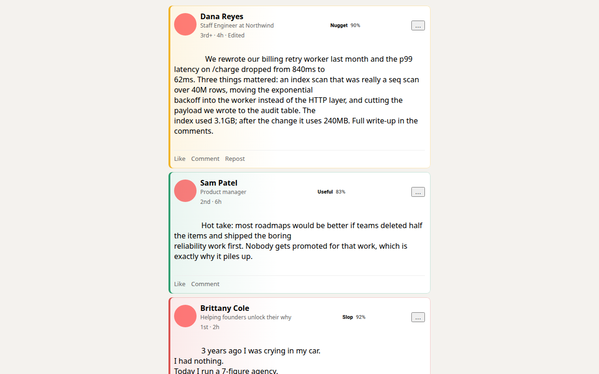
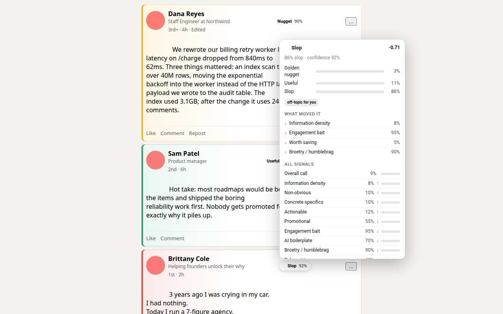
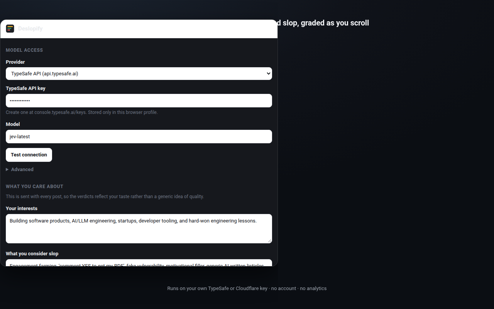

1 · Read
When a post scrolls into view, Deslopify takes its text, author, and whether it is promoted, suggested or a repost. Nothing else on the page is read.
Deslopify reads each post in your LinkedIn feed and labels it — golden nugget, useful, or slop — with the reasoning shown, not just a verdict.
Free and open source. Runs on your own TypeSafe or Cloudflare key — no account, no analytics, no server of ours.

When a post scrolls into view, Deslopify takes its text, author, and whether it is promoted, suggested or a repost. Nothing else on the page is read.
It asks TypeSafe's jev eleven structured questions in a single call: one overall verdict, one information-density score, and nine yes/no signals.
The answers become a verdict using weights and thresholds in the extension itself — not inside a prompt. Every signal is visible, and every weight is yours to change.
Click any badge for the model's probability for each verdict, the signals that moved the score, the model that answered, and what it cost in tokens. Low-confidence calls are marked instead of being hidden.
The verdicts are tuned to you: your interests, your definition of slop, your definition of a nugget. That profile is sent with each request, so the labels reflect what you actually care about.


Deslopify needs an API key from TypeSafe (or a Cloudflare Workers AI token). You pay your provider directly for what you use — grading a feed is cheap, and verdicts are cached so re-reading a feed costs nothing.
npm install && npm run buildchrome://extensions and turn on Developer mode.dist/chrome folder.npm install && npm run buildabout:debugging#/runtime/this-firefox.dist/firefox/manifest.json.
Firefox drops temporary add-ons when it quits; npm run sign:firefox produces a signed copy that
stays installed.
No accounts, no analytics, no Deslopify servers. The text of the post on your screen is sent only to the AI provider you configured, with your key. Settings and cached verdicts stay in your browser, and the cache can be cleared from the popup at any time.